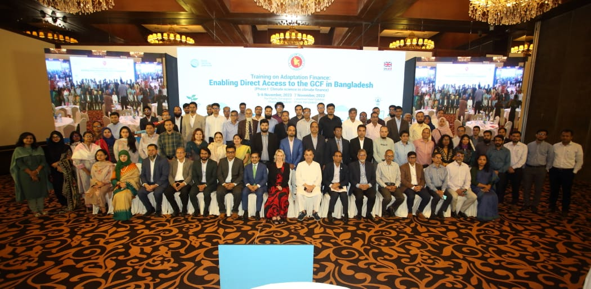

🏢 Organization: Global Center on Adaptation (GCA)
🗓️ Duration: October 2023 – November 2023

The goal of GCA’s training on Adaptation Finance is to develop sustainable capacity of Access Entities, Executing Entities, and Adaptation Experts to better design adaptation concept notes and funding proposals for the GCF. GCF resources are allocated based on the ability of a proposed activity to demonstrate “its potential to adapt to the impacts of climate change in the context of promoting sustainable development and a paradigm shift and the urgent and immediate needs of vulnerable countries.” Project proposals submitted to the GCF must sufficiently demonstrate the need for climate finance and include science-based evidence that the problems to be addressed through the proposed intervention are driven by climate change and climate variability. Project proponents must therefore include a strong climate rationale to explain, as clearly as possible, the climate impacts or risks that the proposed activities address.